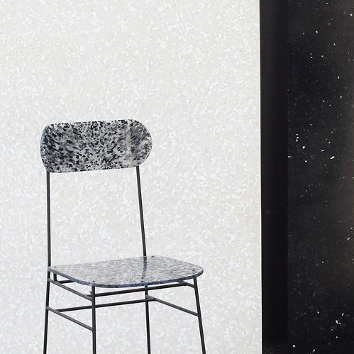
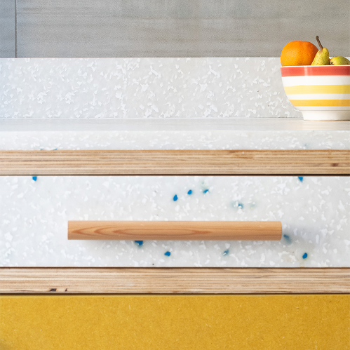
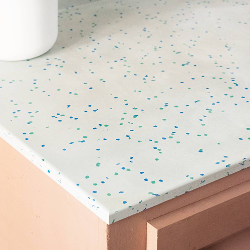
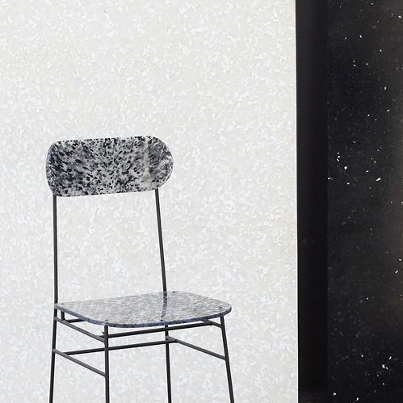
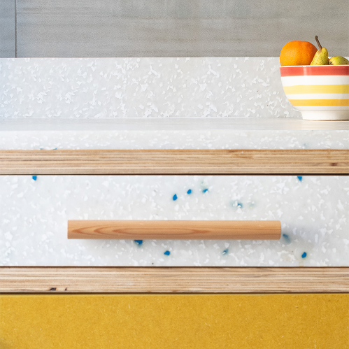
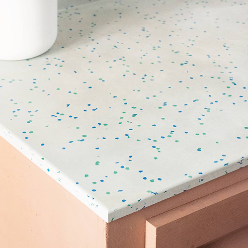

PLASTIZ
Plastiz è una start-up a vocazione sociale fondata a Torino nel 2021, specializzata nella produzione di pannelli in plastica riciclata
destinati all’arredo di interni ed esterni. Per due anni ho collaborato con l’azienda occupandomi della gestione della comunicazione.
Sul piano digitale ho curato la presenza del brand su Instagram, Facebook, LinkedIn, YouTube e Pinterest, redigendo il piano editoriale e realizzando i contenuti: servizi fotografici degli arredi, video
per i social e video istituzionali. Parallelamente mi sono occupata dell’aggiornamento del sito web e della redazione mensile
della newsletter.
Sul piano offline ho seguito la progettazione
dei materiali di comunicazione come cataloghi, biglietti da visita, brochure e flyer per eventi.
SOCIAL MEDIA
FOTOGRAFIA
VIDEO EDITING
2022-2023
 




